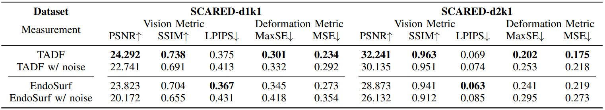

Experimental Results of all the Comparison Methods on EndoNeRF and SCARED Datasets.

Experimental results on EndoNeRF dataset.

Minimally invasive procedures have been advanced rapidly by the robotic laparoscopic surgery. The latter greatly assists surgeons in sophisticated and precise operations with reduced invasiveness. Nevertheless, it is still safety critical to be aware of even the least tissue deformation during instrument-tissue interactions, especially in 3D space. To address this, recent works rely on NeRF to render 2D videos from different perspectives and eliminate occlusions. However, most of the methods fail to predict the accurate 3D shapes and associated deformation estimates robustly. Differently, we propose Tracking-Aware Deformation Field (TADF), a novel framework which reconstructs the 3D mesh along with the 3D tissue deformation simultaneously. It first tracks the key points of soft tissue by a foundation vision model, providing an accurate 2D deformation field. Then, the 2D deformation field is smoothly incorporated with a neural implicit reconstruction network to obtain tissue deformation in the 3D space. Finally, we experimentally demonstrate that the proposed method provides more accurate deformation estimation compared with other 3D neural reconstruction methods in two public datasets.
@misc{wang2025trackingawaredeformationfieldestimation,
title={Tracking-Aware Deformation Field Estimation for Non-rigid 3D Reconstruction in Robotic Surgeries},
author={Zeqing Wang and Han Fang and Yihong Xu and Yutong Ban},
year={2025},
eprint={2503.02558},
archivePrefix={arXiv},
primaryClass={cs.CV},
url={https://arxiv.org/abs/2503.02558},
}